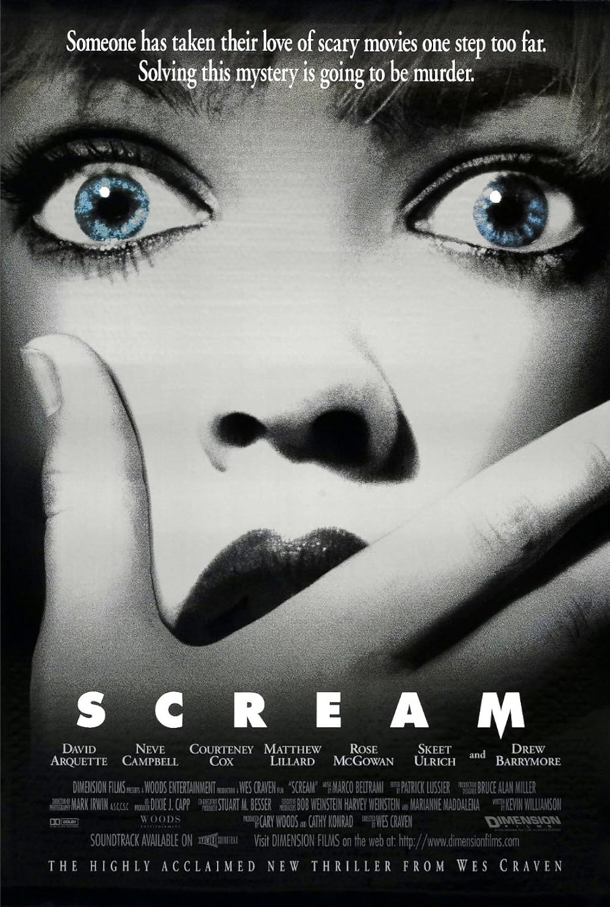
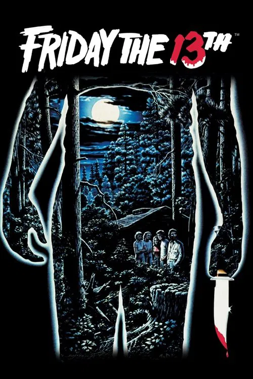
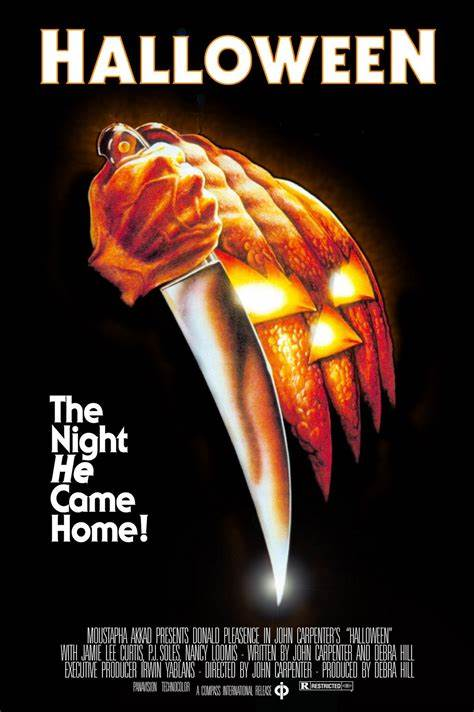
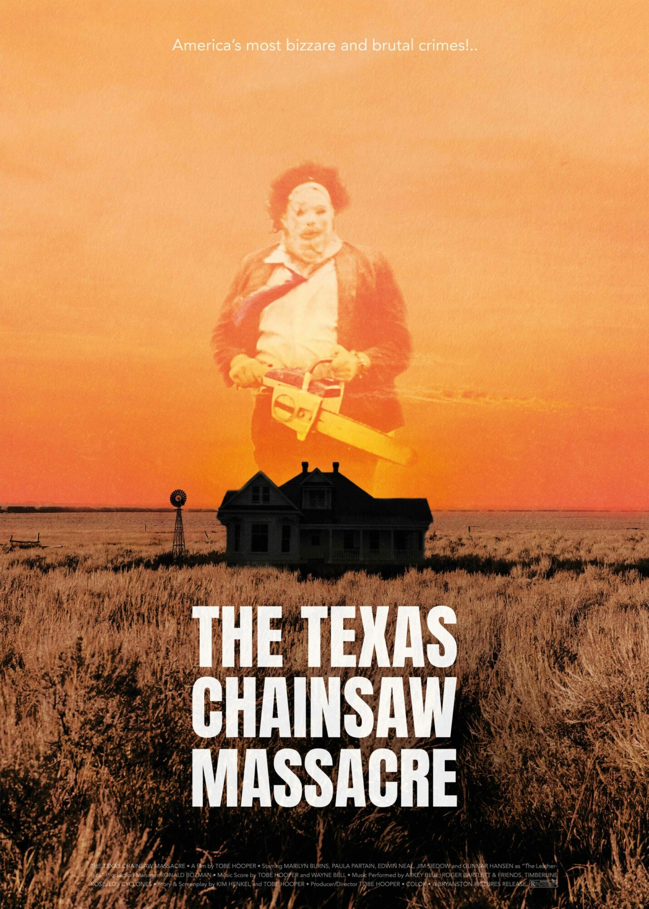

Lets Talk Franchises
Scream
Debut: 1996
Killer: Ghostface (varies by film)
Description: Directed by Wes Craven, Scream reinvigorated the slasher genre with its meta-awareness and sharp wit. The story follows Sidney Prescott, who is hunted by various killers donning the iconic Ghostface mask. With its mix of suspense, dark humor, and commentary on horror tropes, it remains one of the most beloved franchises in horror history.
Friday the 13th
Debut: 1980
Killer: Jason Voorhees (and his mother in the original)
Description: Set around the cursed Camp Crystal Lake, this franchise is synonymous with brutal kills and the silent menace of Jason Voorhees. Known for its atmospheric woods setting and creative death scenes, Friday the 13th helped shape the formula of the slasher subgenre through a long series of sequels and reboots.
Halloween
Debut: 1978
Killer: Michael Myers
Description: John Carpenter's Halloween is considered the blueprint for modern slashers. The chilling story of Michael Myers returning to his hometown after escaping a mental institution to stalk babysitters created an enduring figure of pure evil. The eerie soundtrack and use of suspense over gore set it apart from its imitators.
A Nightmare on Elm Street
.jpg)
Debut: 1984
Killer: Freddy Krueger
Description: Freddy Krueger, with his bladed glove and burned face, terrorizes teens in their dreams in Wes Craven’s supernatural slasher. The franchise stands out for its dream logic, imaginative kills, and the increasingly twisted humor of its villain. Freddy became a pop culture icon, unlike any other slasher figure.
Child's Play
.jpg)
Debut: 1988
Killer: Chucky (a Good Guy doll possessed by a serial killer)
Description: What starts as a creepy story of a killer doll evolves into a wild ride of horror-comedy and absurd mayhem. Chucky, infused with the soul of killer Charles Lee Ray, slashes his way through a franchise that embraces its campy charm while never forgetting its horror roots. The series has expanded into TV and reboot territory while keeping its cult status intact.
The Texas Chainsaw Massacre
Debut: 1974
Killer: Leatherface
Description: Tobe Hooper's The Texas Chainsaw Massacre shocked audiences with its raw, documentary-like terror and the introduction of Leatherface — a chainsaw-wielding maniac wearing human skin. The film spawned numerous sequels, reboots, and prequels, becoming a cornerstone of the slasher genre with its gritty visuals and relentless brutality.